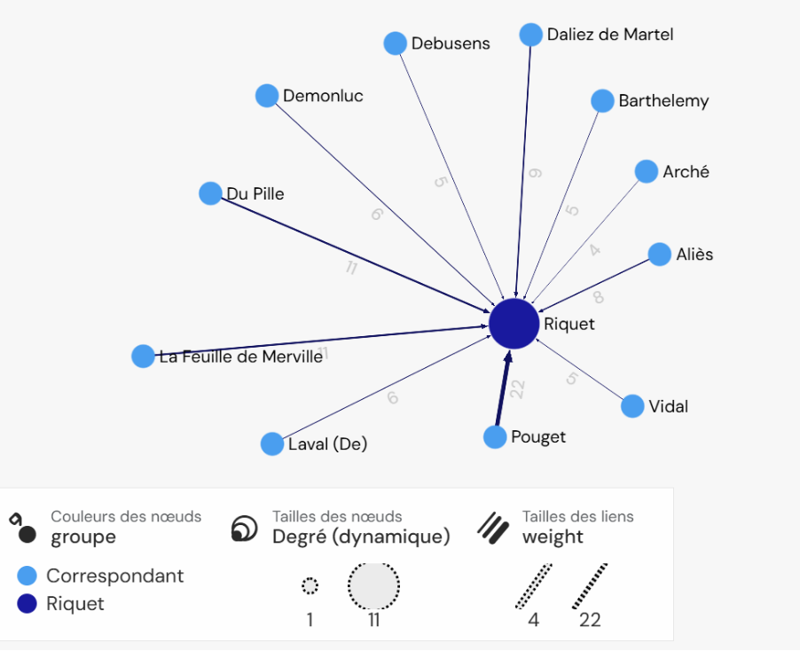
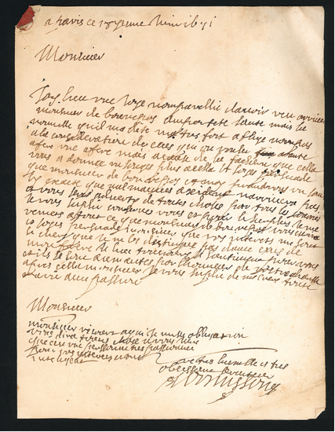
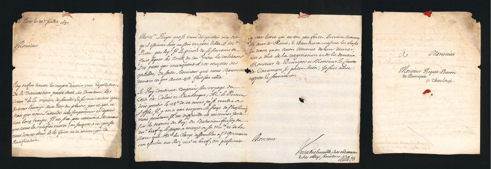

Volet I
Construire le canal
La construction du canal du Midi ne repose pas sur Pierre-Paul Riquet seul. Autour de lui intervient un ensemble très divers d’agents, d’hommes de confiance, de responsables des travaux, de financiers et d’intermédiaires. Pourtant, les correspondances montrent combien Riquet tient à rester informé et à suivre personnellement les affaires de son entreprise.
Les lettres deviennent ainsi indispensables au fonctionnement du chantier. Elles permettent de faire remonter des informations depuis des territoires éloignés, de rendre compte des travaux et de maintenir le lien entre les nombreux hommes mobilisés. Cette correspondance révèle aussi le caractère très directif de Riquet : son contrôle ne porte pas seulement sur les travaux eux-mêmes, mais également sur la manière dont l’information lui est transmise.
Un réseau organisé autour de Riquet
Jusqu’à sa mort en 1680, Pierre-Paul Riquet constitue le principal destinataire des correspondances conservées dans l’ensemble étudié. Cette position centrale apparaît nettement lorsque l’on représente les relations entre les différents producteurs des lettres.
Le réseau ne doit cependant pas être lu comme l’œuvre d’un homme isolé. Il révèle au contraire la diversité des personnes nécessaires à la construction du canal et l’importance d’une circulation régulière de l’information entre le chantier, Toulouse et Paris.

Une correspondance de chantier
Informer Riquet
La correspondance permet de mesurer à quel point la construction du canal nécessite des échanges continus. Les personnes présentes sur le terrain écrivent à Riquet afin de lui transmettre des informations qu’il ne peut recueillir lui-même partout à la fois.
La lettre de Barancy du 18 juin 1671 offre un exemple concret de ces échanges entretenus autour de Pierre-Paul Riquet pendant la construction du canal. Barancy est directement lié au monde du chantier : les sources permettent de le retrouver quelques années plus tard comme contrôleur des travaux du département de Castelnaudary, fonction qu’il exerce au moins entre 1681 et 1685.
Sa présence dans la correspondance adressée à Riquet témoigne ainsi des relations entretenues avec les hommes chargés du suivi des travaux. Ces échanges permettent à Riquet de recevoir des informations provenant des différents secteurs du chantier et de conserver un regard sur une entreprise répartie entre plusieurs départements.

Un homme de confiance
Bernard Aliès, un relais auprès de Riquet
La correspondance de Bernard Aliès permet surtout d’observer le fonctionnement quotidien de l’entreprise de Riquet. Homme de confiance, il constitue un relais auquel peuvent être confiées certaines affaires lorsque Riquet ne peut les suivre directement. Ses lettres témoignent ainsi de la nécessité, pour l’entrepreneur, de s’appuyer sur un entourage capable de transmettre les informations et de suivre ses intérêts à distance.
La lettre du 20 juillet 1680 prend une résonance particulière puisqu’elle appartient aux derniers mois de la vie de Pierre-Paul Riquet. Elle permet d’observer ce réseau de confiance à un moment où l’organisation de l’entreprise est sur le point de changer. Après la mort de Riquet, le 1er octobre 1680, ses héritiers doivent à leur tour s’appuyer sur des intermédiaires pour assurer la continuité de l’administration du canal.

Après Riquet : une nouvelle organisation
La disparition de Pierre-Paul Riquet le 1er octobre 1680 entraîne une transformation importante de cette organisation. Ses fils héritent du canal et mettent en place une gestion partagée. L’information ne converge désormais plus vers une seule figure : les secrétaires et les intermédiaires prennent une place croissante dans les échanges.